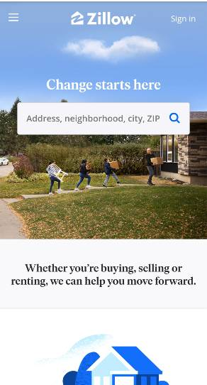
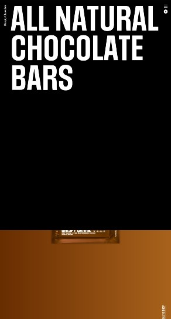

Fitts' Law
Featuring Zillow
"The time to reach the target depends on the distance to the target and its size. The bigger the icon or a button, the easier it is to reach it." - Fitts' Law Users go to Zillow to search for homes. Having a large, obvious search box front and center when you land on their home page is a great example of Fitts' Law.
Visual Heirarchy
Featuring Simply Chocolates
Visual hierarchy is a pattern in the visual field wherein some elements tend to "stand out," or attract attention, more strongly than other elements, suggesting a hierarchy of importance. The first thing you’re drawn to in the design of Simply Chocolate's website is the huge text that explains what the product is all about. This is done in a way that doesn’t detract from the other elements on the screen.
Hick's Law
Featuring EveryPlate
"The time required to reach a decision increases logarithmically with the number of choices." - Hick's Law EveryPlate does a great job of using Hick's Law to not overwhelm the customer with choices. Each week, customers are assigned preselected meals. While they are able to edit these choices, there are still only about 12 to choose from. The limited choices, combined with the meal picture tiles, makes this a visually appealing and user-friendly website.